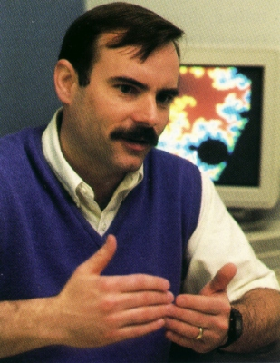

Jack Lutz
Professor of
Computer Science
Iowa State University
Ames, IA 50011
U.S.A.
Ph.D., California Institute of Technology, 1987
N.S.F. Presidential Young Investigator, 1991-1996
Member of Conference Committee,
IEEE Conference on Computational Complexity,
2000-2002
Phone:
+1-515-294-9941
Fax:
+1-515-294-0258
E-mail:
lutz@cs.iastate.edu
Office:
206
Atanasoff
Hall
Research interests:
Measure and Information in Computational Complexity
Publications
Graduate students